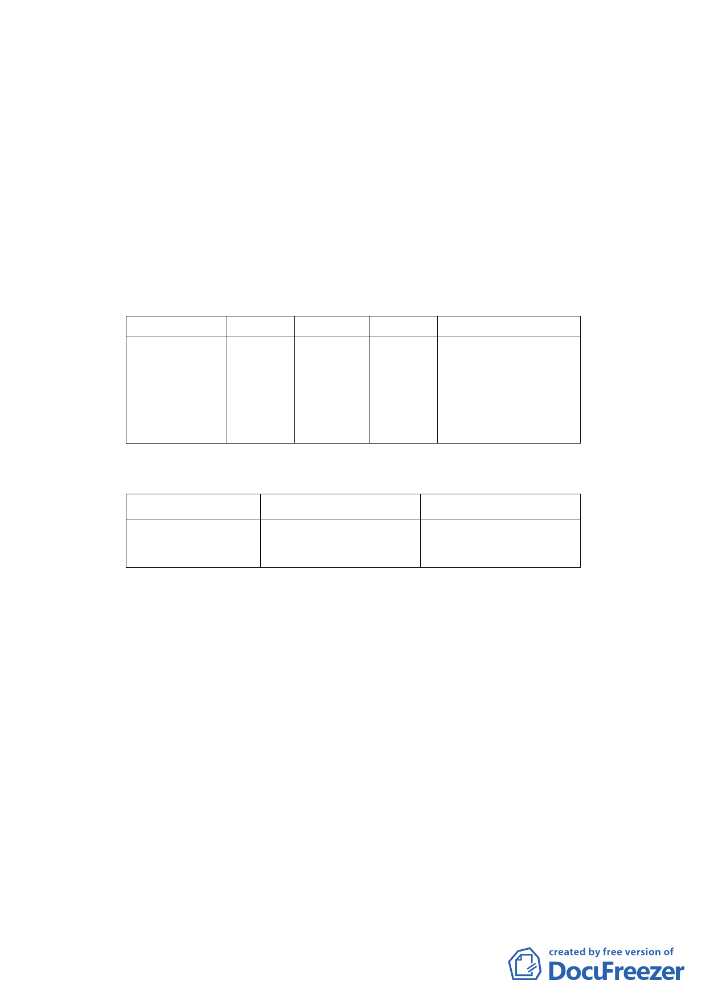

本計畫面積為3,008平方公尺，範圍為福和段二小段75、
76 地號等2筆土地，均為公私共有，土地所有權人166
名，其中市有土地面積為235.97平方公尺，其中「臺北市
都市更新處」管有228.33平方公尺（持分75、76地號土
地），「臺北市政府都市發展局」管有7.64平方公尺（持
分76 地號土地），共佔7.84％；餘2,772.03平方公尺均
為私人所有，占92.16％。
四、 變更細部計畫內容：
（一）變更土地使用分區
位置
原計畫 新計畫
中正區福和段
二小段75、76
地號等2 筆土
地
第三種
住宅區
第三種住
宅區(特)
（二）土地使用分區管制
1.使用強度
面積（㎡）
變更理由
配合「修訂臺北市老舊
中低層建築社區辦理
3,008 都市更新擴大協助專
案計畫」，變更原計畫
內容。
使用分區
原計畫
新計畫
第三種住宅區（特）
建蔽率45%
建蔽率45%
容積率225%
容積率225%
2.使用管制
本計畫之使用比照「臺北市土地使用分區管制自治條例」之
第三種住宅區規定辦理。
3.本計畫區得適用100.9.20公告之「修訂臺北市老舊中低層建
築社區辦理都市更新擴大協助專案計畫」之容積獎勵。本計
畫區總容積上限不得超過建築基地2倍法定容積。
4.本計畫區獎勵容積核給額度，依本市都市設計及土地使用開
發許可審議委員會及都市更新及爭議處理審議會審議結果辦
理。
五、 全案係市府101.11.29府都規字第10137659203號函送到會，
並於101.11.30起公開展覽30天。
六、 公民或團體所提意見：無。
七、 申請單位：臺北市政府（都市更新處）。
八、 辦理單位：臺北市政府。
九、 法令依據：都市計畫法第27 條第1 項第4 款。
- 15 -